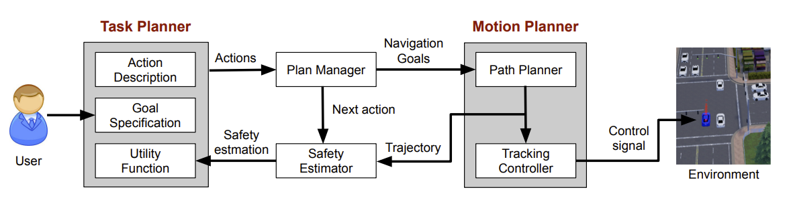
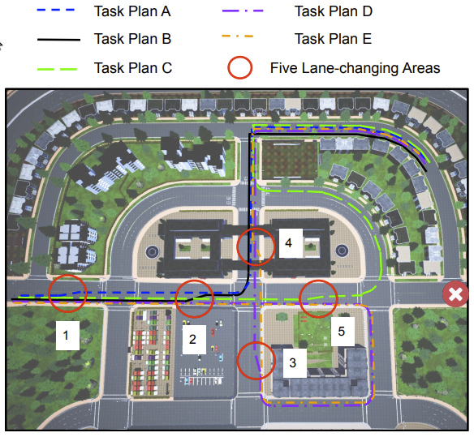
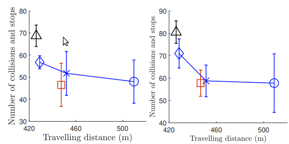
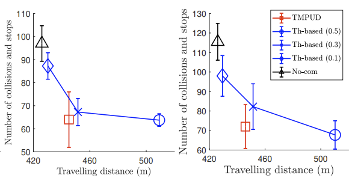

Yan Ding, Xiaohan Zhang, Xingyue Zhan, Shiqi Zhang
SUNY Binghamton
IEEE IROS, 2020
[Paper] [Code] [Demo] [Presentation]
Abstract
Autonomous vehicles need to plan at the task level to compute a sequence of symbolic actions, such as merging left and turning right, to fulfill people's service requests, where efficiency is the main concern. At the same time, the vehicles must compute continuous trajectories to perform actions at the motion level, where safety is the most important. Task-motion planning in autonomous driving faces the problem of maximizing task-level efficiency while ensuring motion-level safety. To this end, we develop algorithm Task-Motion Planning for Urban Driving (TMPUD) that, for the first time, enables the task and motion planners to communicate about the safety level of driving behaviors.
Contribution
The contribution of this research is two-fold, including the new safety estimator, and the TMPUD algorithm. We have implemented and evaluated TMPUD using CARLA, an autonomous driving platform for simulating urban driving scenarios. Results suggest TMPUD improves both safety and efficiency, in comparison to two baseline methods from the literature
Framework
|  |
TMPUD consists of four components, i.e., task planner, plan manager, motion planner and safety estimator. Task planner includes components of goal specification, action description, and utility function, where users’ service requests are received by the goal specification component. Task planner computes a sequence of symbolic actions that are passed to the plan manager. The plan manager generate navigation goals (i.e., a pair of two poses) to path planner, which is then used for computing a continuous trajectory for connecting 2D poses. The trajectory will be used in the two components of safety estimator and tracking controller. Safety estimator uses this trajectory to estimate actions’ safety levels, and then the utility function in task planner can be updated accordingly. Tracking controller computes the desired control signals to drive the vehicle to follow the trajectory from the path planner
Experiment Results
|  |
Illustrative example: TMPUD starts with using our optimal task planner to compute Plan A. The vehicle takes the first symbolic action from Plan A (trajectory in blue color), and executes the action using our motion planner. Getting close to Area 1, the vehicle plans to merge left. However, the safety estimator at the motion level reports a low safety value in Area 1. This computed safety value is incorporated into task planner, where the task planner integrates the safety value into its cost function, and re-computes an optimal plan, Plan B. Different from Plan A, Plan B suggests the vehicle to go straight, and merge left in Area 2. In this trial, the vehicle was able to follow Plan B all the way to the goal. TMPUD enabled the vehicle to avoid the risky behavior of merging left in Area 1 without introducing extra motion cost.
|  |
|  |
Overall performances of TMPUD and two baseline methods: The x-axis represents the average traveling distance, and the y-axis represents the total number of collisions and stops. The four subfigures correspond to four different road conditions. The road conditions, from left to right, are low-density and low-acceleration, low-density and high-acceleration, high-density and low-acceleration, high-density and highacceleration. Under each road condition, we evaluate each algorithm using 4000 trials. We did batch-based evaluations with four batches for significance analysis, where each batch includes 1000 trials.
Acknowledgements
The authors thank Fangkai Yang for discussions on this topic. This work has taken place in the Autonomous Intelligent Robotics (AIR) Group at SUNY Binghamton. AIR research is supported in part by grants from the National Science Foundation (IIS-1925044 and REU Supplement), Ford Motor Company (URP Awards), OPPO (Faculty Research Award), and SUNY Research Foundation